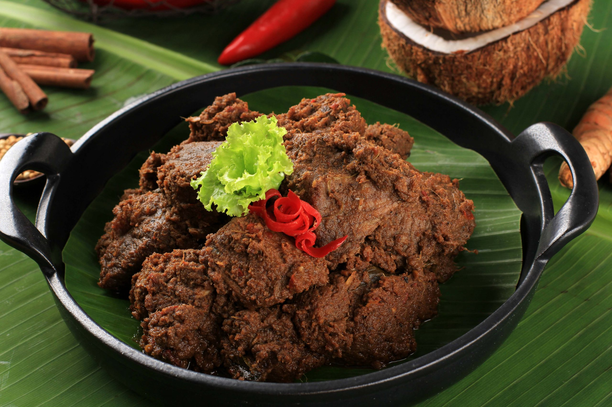

Home
Rendang Recipe
Rendang Recipe

Description
Few dishes can truly elevate the senses, like beef rendang.
It isn’t just a feast; it’s a symphony of flavors that captivate the taste buds.
Ingredients
- Beef
- Coconut Cream
- Onions
- Ginger
- Galangal
- Tumeric
- Lemongrass
- Chili
- Assam Keping
- Sugar
- Tumeric Leaves
- Candlenuts
Steps
-
Cut the beef into 4 cm squares. Avoid cutting the beef too small, as it can break into smaller pieces during cooking.
Make sure to cut it against the grain using the sharpest knife available. If the beef is too soft to cut,
return it to the freezer until it firms up. The pieces should not be smaller than 2 cm cubes; otherwise, the meat may easily break apart.
-
For Ingredients B in the recipe, chop all the larger items. Most of these spices can be found in Asian markets.
If whole spices are unavailable, you can use ground spices, but check the expiration date to ensure you have the freshest ones for rendang.
Blend until it becomes a fine paste.
Blend the spices using an electric blender without adding water, as the chilies and onions contain enough moisture.
Adding water will prolong the sautéing time for the spices to turn aromatic.
-
Heat the vegetable oil in a wok. Sauté the spice paste (blended with Ingredients B) over low to medium heat until it becomes aromatic.
This step allows their flavors to develop.
Stir the spice paste constantly, as it can scorch easily. Stop sautéing when the paste is fragrant or when the oil separates from the spices.
-
Add the beef and mix well with the spices. Mix with spice paste thoroughly.
-
Add the coconut cream and some hot water to the curry paste in the wok.
-
Prepare the lemongrass by bashing it to release its flavor. First, remove the green sections and the outer sheath, using only the white part of the lemongrass.
Add the lemongrass, kaffir lime leaves, asam keping, and turmeric leaves (Ingredients C).
-
Once the liquid reaches a boil, reduce the heat to low and continue simmering. When the stew starts to dry out, add water as needed.
Continue cooking over low heat until the beef is tender and turns dark brown about three hours.
Slow cooking is essential for achieving tender beef. You can use an Instant Pot or multicooker to shorten the cooking time.
Most modern multicookers have programmed modes for beef stew. If you pressure cook the beef, remember to use less water.
-
Since this is a dry beef rendang recipe, the cooking process should continue until the liquid is completely dry.
If it becomes too dry before the cooking time ends, add water. Authentic Minang rendang is dry in texture. As the liquid evaporates,
it will eventually caramelize completely. The beef will continue to cook in the remaining oil and absorb all the flavors of the spices.
Garnish the rendang with turmeric leaves cut into thin strips, red chilies, and kaffir lime leaves.